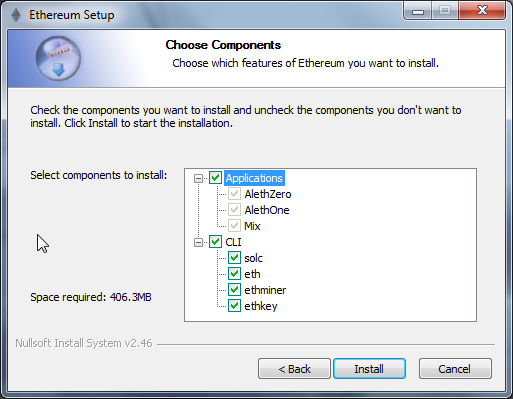

挖矿¶
引言¶
挖矿一词，源自针对加密货币的淘金行为。金子或者珍贵的金属是罕见的，数字代币也是一样，而挖矿是唯一能增加其数量的方式。这也同样适用于以太坊，发布交易的唯一模式就是挖矿。然而与这些例子不同的是，挖矿也是一种通过在区块链上创建、校验、发布和广播区块来确保网络安全方式。
- 挖以太币 = 确保网络安全 = 校验计算结果 （Mining ether = Securing the Network = Verifying Computation）
什么是挖矿？¶
以太坊与其他区块链技术一样，采用了一个动机驱动（incentive-driven）的安全模型。共识是通过选择总体难度值最高的区块来实现的。矿工产出的区块，由其他节点检查其合法性。在遵从数据格式的前提之下，只有当一个区块包含给定 难度（difficulty） 的 工作量证明（Proof of Work） 时，它才是合法的。注意，在以太坊的Serenity里程碑，这将被替换为 权益证明（proof of stake）模式 。
尽管以太坊区块链在很多方面都与比特币区块链相同，但还是有些其他的区别。从区块链架构上看，以太坊和比特币的主要区别在于以太坊的区块既包含了交易列表，也包含了最新的状态信息（通过merkle patricia树的根节点哈希来对状态信息编码以使其更加精确，merkle patricia树是一种改进的二叉树，可以确保每个叶子节点的变化都会导致根节点哈希变化，从而可以精确地判断整个树上数据的状态是否有变动，译者注）。除此之外，区块号和难度值也会被存储到区块中。
以太坊使用的工作量证明（Proof of Work）算法被称为 Ethash （ Dagger-Hashimoto algorithm 的修改版本）包含了为算法找到一个 随机数（nonce） 输入以确保计算结果满足当前的难度限定。PoW算法的关键是没有比枚举所有的可能来找到这样的随机数更好的方式，尽管验证答案是简单容易的。由于输出结果有一个统一的分布（因为他们都是哈希函数的输出结果），我们可以确保平均来讲，找到这个随机数所需要的时间是依赖于当前难度限定的。这就使通过控制难度值来控制区块产生的时间成为可能。
由协议所控制，难度值会自动调整，以使整个网络产生区块的平均时间在每15秒左右。我们称之为：网络用 15秒的区块时间 来生成区块链。这个“心跳”从基础上不断同步系统状态，并确保除非攻击者拥有超过全网挖矿能力一半的算力（即所谓的 51%攻击 ），否则想要维持一个分叉（来允许双花，即double spend，一个虚拟货币交易的关键问题，译者注）或让恶意用户篡改交易历史是不可能的。
任意参与到网络中的节点都可以成为矿工，他们挖矿的收入是与他们的挖矿能力或 哈希效率（hashrate） 成比例的，也就是每秒尝试计算随机数的次数与全网整体哈希效率的比例。
Ethash工作量证明是有 存储难度（memory hard） 的，以使它具有 ASIC抗性（ASIC，即Application Specific Integrated Circuit，指为特定目的设计的集成电路，在此指那些转为提供算力设计的特殊计算单元组，译者注） 。存储难度是由一个需要选择依赖于随机数和区块头的固定资源子集的工作量证明算法提供的。这些资源（一般为若干GB大小的数据）被称为 DAG 。每30000个区块，125小时的周期（被称为 epoch ，大概5.2天）之后， DAG 会花一点儿时间重新生成，与之前完全不同。由于DAG仅依赖于区块高度，所以它可以被预生成，而如果没有预生成，客户端则需要等待这个生成过程结束才能产生新的区块。如果客户端没有超前预生成DAG缓存，那么在每个epoch周期窗口可能会导致大量的区块延迟。而当客户端验证PoW结果的时候是不需要DAG的，以使那些CPU较差或存储较小的节点也可以进行验证处理。
作为一个特殊情况，当你从scratch（一个由麻省理工学院设计开发的编程工具，译者注）中启动节点的时候，仅当当前epoch对应的DAG创建完毕之后才能开始挖矿。
挖矿奖励¶
矿工依靠成功的工作量证明确认区块之后将收到：
- 为‘获胜的’区块提供的一份*固定的区块奖励*：5.0以太币
- 包含在区块中的扩展该区块所花费的气 - 基于当前气的价格换算的一定量以太币
- 因将uncles包含到区块中所产生的一份额外奖励，以每包含一个uncle就额外获得1/32的形式
对这个区块所包含的所有交易进行的计算中消耗的气，将由每个交易的发送者支付给挖到这个区块的矿工。根据共识协议，这些计算所引起的气的消耗会被记入矿工的账号。随着时间的推移，这将会减少固定的区块奖励。
Uncles 是一些废区块，也就是一些父区块是当前区块祖先（最多回溯6个区块）的区块。有效的uncle区块将被奖励，以抵消因网络延迟所产生的挖矿奖励差值，从而增加安全性。这也被称为幽灵协议，即GHOST（Greedy Heaviest Observed SubTree，译者注） Protocol。由成功的工作量证明矿工写入区块的uncle区块，会得到7/8的静态区块奖励（即4.375以太币）。每个区块最多允许有两个uncle。
挖矿的成功依赖于给定的区块难度。这个难度会动态的调整以控制整个网络的哈希能力来产生12秒区块时间。所以你找到区块的几率是由你所拥有的针对区块难度的哈希效率所决定的。
Ethash DAG¶
Ethash为工作量证明算法使用 DAG （Directed acycle graph，即无回路有向图，译者注），它会在每个 epoch 期间生成，也就是每30000个区块（125小时|5.2天）。生成DAG会花费较长时间。如果客户端只在需要时才生成它，那么你将会在每个新的epoch周期中第一个区块产生前看到一个很长的等待。然而由于DAG只与区块号有关，所以它可以，也应该被提前生成，以免在每个epoch期间都要等待较长时间。 geth 和 ethminer 客户端实现都会自动计算并维持两个DAG以使epoch切换可以顺畅地进行。当挖矿由控制台控制的时候，自动DAG生成是可以被打开和关闭的。当用 --mine 参数启动 geth 的时候，自动生成DAG是默认打开的。注意，客户端是共享DAG资源的，如果你在同时运行多个客户端实例，请确保只有其中一个打开了DAG自动生成设置。
要为任意一个epoch生成DAG：
geth makedag <block number> <outputdir>
比如 geth makedag 360000 ~/.ethash 。 注意，ethash使用 ~/.ethash （Mac/Linux）或 ~/AppData/Ethash （Windows）作为DAG文件以使其能在不同的客户端实例之间共享。
算法¶
我们使用的算法 Ethash （也就是被称为Dagger-Hashimoto的算法）是基于以组成DAG的巨大的、临时的、随机生成的数据集合（也就是Dagger的部分）为数据供应，来解决一个特定的限制条件（通过一个区块的头哈希来部分决定）的算法。
它被设计为可以在一个较慢的仅CPU环境中可以快速的进行哈希验证，同时可以在一个有大量内存及高带宽支持的环境中提供针对挖矿的巨大速度提升。巨大的内存需求意味着那些大规模集成的矿工相对而言仅会获得非常小的提升。高带宽需求意味着由众多超级计算单元所组成的但共享内存的方式，其速度提升较单一计算单元并不显著。这也是个重要的特性，使矿池挖矿对于那些进行验证的节点而言没有任何益处，从而阻碍了整个网络的中心化趋势。（也就是说，这种算法可以使最终提供合法区块的节点更多的分散到网络中的各个节点上，而不是趋向于集中在那些计算能力最强的节点上，译者注。）
外部挖矿应用和以太坊伺服机（Ethereum daemon）的协同工作，是通过JSON-RPC API实现的。这两个RPC函数是 eth_getWork 和 eth_submitWork 。
这些被正式地记录在 miner 之下的wiki文章 JSON-RPC API 之中。
你需要一个完全同步的允许挖矿的以太坊客户端和一个以太坊账号来开始挖矿。这个账号是用来接受挖矿报酬并且通常会被作为 coinbase 或 etherbase 。请访问 “创建账户” 这个章节来了解如何创建一个账号。
Warning
在开始挖矿之前请确保你的区块链已经和主链完全同步，否则你将无法在主链上挖矿。
CPU挖矿¶
你可以使用你的计算机的CPU来挖取以太币。由于GPU矿工在计算速度和内存上都更有效，所以这不再能帮你赚到钱。但是，你可以在Morden测试网络或者私有网络使用CPU挖矿来创造你用于测试合约和交易的以太币，而不是在当前的主网络上花费真的以太币来做这些测试工作。
Note
测试网络的以太币除了测试目的以外别无它用。（参考 测试网络 。）
使用geth¶
当你使用geth启动你的以太坊客户端时，它并不会默认开始挖矿。要以CPU挖矿模式启动它，你需要使用 --mine 命令行选项 。你也可以同时使用 -minerthreads 参数来指定并行挖矿的线程数（默认会设定为CPU内核总数）。
geth --mine --minerthreads=4
你也可以使用 控制台 在运行时启动、停止CPU挖矿。 miner.start 接受一个用以指定矿工线程数的参数。
> miner.start(8)
true
> miner.stop()
true
请注意，如果你与真实网络同步，你才可以挖到真实的以太币（因为你会在达到共识的区块顶部挖矿）。区块链的下载/同步会推迟挖矿，挖矿会在同步完成之后自动开始，除非你用 miner.stop() 取消。
为了获取以太币，你必须有你的 etherbase （或 coinbase ）地址。etherbase会默认使用你的主账号。如果你没有一个etherbase地址， geth --mine 将不会开始挖矿。
你可以在命令行设置你的etherbase：
geth --etherbase 1 --mine 2>> geth.log // 1 is index: second account by creation order OR
geth --etherbase '0xa4d8e9cae4d04b093aac82e6cd355b6b963fb7ff' --mine 2>> geth.log
你也可以在控制台重置你的etherbase：
miner.setEtherbase(eth.accounts[2])
请注意你的etherbase不需要是一个本地账号地址，只需要是一个存在的账号即可。
有一个选项可以为你挖到的区块 添加额外的数据 （仅32字节）。基于协议，这会被视为一个unicode字符串，所以你可以随意设定你的虚拟标签。
miner.setExtra("ΞTHΞЯSPHΞЯΞ")
...
debug.printBlock(131805)
BLOCK(be465b020fdbedc4063756f0912b5a89bbb4735bd1d1df84363e05ade0195cb1): Size: 531.00 B TD: 643485290485 {
NoNonce: ee48752c3a0bfe3d85339451a5f3f411c21c8170353e450985e1faab0a9ac4cc
Header:
[
...
Coinbase: a4d8e9cae4d04b093aac82e6cd355b6b963fb7ff
Number: 131805
Extra: ΞTHΞЯSPHΞЯΞ
...
}
你可以使用 miner.hashrate 检查你的哈希效率（hashrate），结果的单位是H/s（每秒的哈希操作数）。
> miner.hashrate
712000
当你成功挖到区块之后，你可以检查你的etherbase中的以太币余额。假设你的etherbase是一个本地账户：
> eth.getBalance(eth.coinbase).toNumber();
'34698870000000'
为了在交易中用气（gas）消费你的收入，你需要解锁这账户。
> personal.unlockAccount(eth.coinbase)
Password
true
你可以在控制台使用以下命令检查特定的矿工（地址）挖到了哪些区块：
function minedBlocks(lastn, addr) {
addrs = [];
if (!addr) {
addr = eth.coinbase
}
limit = eth.blockNumber - lastn
for (i = eth.blockNumber; i >= limit; i--) {
if (eth.getBlock(i).miner == addr) {
addrs.push(i)
}
}
return addrs
}
// scans the last 1000 blocks and returns the blocknumbers of blocks mined by your coinbase
// (more precisely blocks the mining reward for which is sent to your coinbase).
minedBlocks(1000, eth.coinbase);
//[352708, 352655, 352559]
请注意，你挖到一个区块，然而它并没有被当前的标准链所认可的情况（即其可能没有被包含在当前网络中的最长分叉上，译者注）是经常会发生的。这意味着，当你本地包含了你挖到的区块之后，当前状态会显示相应的挖矿报酬添加到你的账户，然而过了一段时间，不包含你的区块的更好的链（即更长的、被更多节点认可的分叉，译者注）被接受并切换到其上之后，你将不会实际获得挖矿报酬。也就是说，一个矿工会发现自己的coinbase余额非常可能会有一些上下浮动。
GPU挖矿¶
硬件¶
我们的算法是强内存（memory hard）的，以在内存中适配DAG，每个GPU都需要1到2GB内存。如果你收到 Error GPU mining. GPU memory fragmentation? 这样的消息，说明你没有足够的内存。GPU矿工是由OpenCL实现的，所以AMD的GPU回比同系列的NVIDIA的GPU快一些。ASIC（即Application Specific Integrated Circuit，特定应用的集成电路，译者注）和FPGA（即Field－Programmable Gate Array，一种半定制ASIC，译者注）则相对不够有效，所以不推荐。要获取针对你的芯片和平台的openCL，可以尝试：
Ubuntu Linux上的安装¶
你需要Ubuntu 14.04或15.04以及fglrx图形驱动来使用这个快速向导。你当然也可以使用NVidia驱动和其他平台，但你就需要自己找到可用的openCL了，比如 Genoil’s ethminer fork 。
如果你使用15.04，你可以在 “Software and Updates > Additional Drivers” 中设置 “Using video drivers for the AMD graphics accelerator from fglrx” 。
如果你使用14.04，你可以在 “Software and Updates > Additional Drivers” 中设置 “Using video drivers for the AMD graphics accelerator from fglrx” 。不幸的的是，这在有些人机器上会出现问题，因为一个已知的Ubuntu 14.04.02的bug，它会阻止你切换到这个特定的GPU挖矿所需的显示驱动上。
所以如果你遇到了这个bug，在你尝试其他方法之前，进入 “Software and updates > Updates” 选择 “Pre-released updates trusty proposed” 。然后回到 “Software and Updates > Additional Drivers” 再次设置 “Using video drivers for the AMD graphics accelerator from fglrx” 。重启之后，再检查下是否所需的驱动已经被安装好了（比如再进入 “Additional Drivers” 进行检查）。
无论你做什么，如果你在使用14.04.02版本，不要在设置好驱动后再更改驱动或更改驱动的设置。例如，使用 aticonfig –initial （特别是用-f、–force选项）会影响你的安装。如果你以外的更改了他们的配置，你将需要卸载这些驱动，重启并重新安装，然后再重启。
Mac上的安装¶
wget http://developer.download.nvidia.com/compute/cuda/7_0/Prod/local_installers/cuda_7.0.29_mac.pkg
sudo installer -pkg ~/Desktop/cuda_7.0.29_mac.pkg -target /
brew update
brew tap ethereum/ethereum
brew reinstall cpp-ethereum --with-gpu-mining --devel --headless --build-from-source
你应该检查温度状态：
aticonfig --adapter=0 --od-gettemperature
Windows上的安装¶
下载最新的 Eth++ 安装程序 在安装页面的 “Choose Components” 中选择ethminer。
在geth中使用ethminer¶
geth account new // Set-up ethereum account if you do not have one
geth --rpc --rpccorsdomain localhost 2>> geth.log &
ethminer -G // -G for GPU, -M for benchmark
tail -f geth.log
ethminer 通过8545端口（geth中默认的PRC端口）与geth通信。你可以用 geth 的 --rpcport 来修改它。Ethminer会在所有端口上查找geth。注意，你需要用 --rpccorsdomain localhost 来设置CORS header。你也可以用 ethminer 的 -F http://127.0.0.1:3301 来设置端口。如果你需要在同一台机器上用多个实例挖矿，你就需要来设置端口了，虽然这有些不得要领（因为算法的强内存限制，多个矿工在同一机器上并不会更加有效，译者注）。如果你在私链上做测试，我们建议你使用CPU挖矿。
Note
你 不 需要在控制台中给 geth 指定 --mine 选项来开启挖矿，除非你希望使用CPU挖矿而不是GPU挖矿。
如果默认的 ethminer 没有正常工作，你可以使用``–opencl-device X`` X为{0, 1, 2, ...}来尝试指定特定的openCL设备。当你用 -M （benchmark，即性能评估模式，译者注）运行 ethminer 时，你会看到类似于下边这样的消息：
Benchmarking on platform: { "platform": "NVIDIA CUDA", "device": "GeForce GTX 750 Ti", "version": "OpenCL 1.1 CUDA" }
Benchmarking on platform: { "platform": "Apple", "device": "Intel(R) Xeon(R) CPU E5-1620 v2 @ 3.70GHz", "version": "OpenCL 1.2 " }
Debug geth：
geth --rpccorsdomain "localhost" --verbosity 6 2>> geth.log
Debug矿工程序：
make -DCMAKE_BUILD_TYPE=Debug -DETHASHCL=1 -DGUI=0
gdb --args ethminer -G -M
Note
在 geth 中使用GPU挖矿时，哈希率（hashrate）信息不可用。
可以用 ethminer 检查哈希率， miner.hashrate 将总是返回0。
在eth中使用ethminer¶
在单GPU上挖矿¶
用如下参数运行eth即可实现单GPU挖矿：
eth -v 1 -a 0xcadb3223d4eebcaa7b40ec5722967ced01cfc8f2 --client-name "OPTIONALNAMEHERE" -x 50 -m on -G
-v 1把verbosity设置为1。我们不要那些垃圾消息。-a YOURWALLETADDRESS设置coinbase，用来接收挖矿报酬。这里仅是个例子。这个参数非常重要，请确保这个地址是正确的，否则你将收不到挖矿报酬。--client-name "OPTIONAL"设置一个可选的客户端名称以在网络上标识你自己。-x 50请求较大量的节点，这有助于在初始阶段找到节点。-m on设置为启动时即开始挖矿。-G设置为允许GPU挖矿。
如果客户端已经在运行，你可以使用geth attach或者[ethconsole]（https://github.com/ethereum/ethereum-console）与之交互。
在多GPU上挖矿¶
用多GPU和eth进行挖矿，与用多GPU和geth进行挖矿非常相近。确定一个eth节点在用你的coinbase地址运行：
eth -v 1 -a 0xcadb3223d4eebcaa7b40ec5722967ced01cfc8f2 --client-name "OPTIONALNAMEHERE" -x 50 -j
请注意我们也增加了-j参数，以便客户端具有JSON-RPC服务，来允许与ethminer实例的通信。此外我们还移除了与挖矿相关的参数因为ethminer现在会为我们开始挖矿了。为了使每个GPU都执行一个不同的ethminer实例：
ethminer --no-precompute -G --opencl-device X
这里的X是你希望ethminer来使用的openCL设备索引号{0, 1, 2, ...}。你可以执行 ethminer --list-devices 来简单地获得所有支持openCL的设备列表，并且附带一些额外信息。
以下是一个输出示例：
[0] GeForce GTX 770
CL_DEVICE_TYPE: GPU
CL_DEVICE_GLOBAL_MEM_SIZE: 4286345216
CL_DEVICE_MAX_MEM_ALLOC_SIZE: 1071586304
CL_DEVICE_MAX_WORK_GROUP_SIZE: 1024
最后， --no-precompute 参数要求ethminer不要预先创建DAG。尽管这已经不推荐了，因为在每个DAG切换周期时你的挖矿都会被打断。
性能评估¶
挖矿能力基本上会随内存及带宽的增加而提高。AMD的GPU会比NVidia的更好的支持我们用OpenCL写成的算法实现。实验证明，同价位的AMD GPU较NVidia竞品可以提供更好的挖矿表现。
要对一个独立的设备进行性能评估，你可以通过使用ethminer的评估模式参数 -M ：
ethminer -G -M
如果你有很多设备，想单独评估某个时，你可以在上述脚本中添加 –opencl-device 选项：
ethminer -G -M --opencl-device X
使用ethminer的 --list-devices 来列出上述命令中可选的设备序号X {0, 1, 2, ...}。
要在Windows系统中进行挖矿，首先 下载geth的windows客户端 。
- 解压Geth并启动命令行窗口。使用 cd 命令切换到Geth的数据文件夹。
- 用
geth --rpc启动Geth。
执行以上命令以后，以太坊区块链就会开始下载数据。有时你的本地防火墙会阻止数据同步（它应该会提示你），这种情况，请点击 “Allow access” （允许访问）。
- 首先 下载并安装ethminer 这个C++挖矿软件（你的防火墙或系统服务会自动反应，允许其访问网络）。
- 打开另一个命令行窗口（保留第一个的运行状态），输入
cd /Program\ Files/Ethereum(++)/release来切换目录。 - 确保 geth 已经完成区块链同步。然后
ethminer -G命令开始挖矿。
这时也许会出现一些问题。如果你得到一个错误提示，你可以用 Ctrl+C 组合键中止挖矿。如果错误提示 “Insufficient Memory” 说明你的GPU没有足够的内存来进行挖矿。
矿池挖矿¶
矿池就是指为了稳定预期收益而将挖矿能力池化的矿工合作组织。作为回报，他们通常会将你的挖矿收益的最多5%支付给你。这种矿池由一个中心账户提供有工作量证明的区块，然后将收益按各合作矿工的挖矿能力重新分配。
Warning
多数矿池包含第三方、中心化的组件，这意味着他们不可信。换句话说，矿池操作者可以带着你的收益跑掉。要小心。另外也有一部分去信任、去中心化的基于开源项目的矿池。
Warning
矿池仅提供工作量证明计算，他们不做区块校验或者运行VM对交易执行结果所导致的状态转移进行检查。在安全方面讲，这样的特性使矿池更像是一个单一的节点，所以矿池的增大和增多会导致中心化 51%攻击 风险的提高。所以请遵从网络计算能力分散化的原则，不要使矿池变得太过巨大。（也就是说，请尽量不要再加入那些计算能力已经很大的矿池了，译者注。）
一些矿池¶
- coinotron
- nanopool
- ethpool - Predictable solo mining, unconventional payout scheme, affiliated with etherchain.org.
- supernova
- coinmine.pl
- eth.pp.ua
- talkether - Unconventional payout scheme, partially decentralized
- weipool
- ethereumpool
- pooleum
- alphapool
- cryptopool
- unitedminers
- dwarfpool - Try to avoid this (currently over 50% of the network)
- laintimes - Discontinued
挖矿相关参考资源¶
- Top miners of last 24h on etherchain
- pool hashrate distribution for august 2015
- Unmaintained list of pools on Forum
- Mining profitability calculator on cryptocompare
- Mining profitability calculator on cryptowizzard
- Mining profitability calculator on etherscan
- Mining profitability calculator on In The Ether
- Mining difficulty chart on etherscan